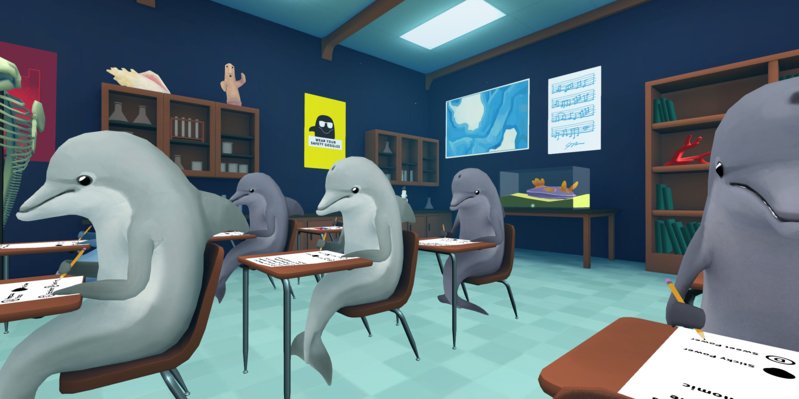

<!doctype html>

<html lang="en">
  <head>
   <!--Basic Presets--> 
    <meta charset="utf-8" />
    <meta name="viewport" content="width=device-width">

  <!--Linking to JS and CSS-->  
    <link rel="stylesheet" href="styles.css" />
    <script src="script.js"></script>
  <!--Website Title-->
    <title>For Learning Porpoises</title>
    
  <!--Google Font Import-->
    <link rel="preconnect" href="https://fonts.googleapis.com">
    <link rel="preconnect" href="https://fonts.gstatic.com" crossorigin>
    <link href="https://fonts.googleapis.com/css2?family=Lexend+Deca:wght@100..900&display=swap" rel="stylesheet">

  <!--Background Color-->
    <!--<style>
      body {
        background-color: #1e1e1e;
      }
    </style>-->
  </head>

</html>


<!--Real words and stuff-->

<!--Website Header-->
<div class="DSimage-container">
  </img>
</div>
<h1 class="websiteHeader">For Learning Porpoises<br>Information obtained from <a href="https://us.whales.org/whales-dolphins/facts-about-dolphins/">us.whales.org</a></h1>


<!--Other Info-->
<div id="grid">

  <div id="basicID">Dolphins are incredible. They are socially skilled, intelligent, agile, joyful, and playful creatures that share many emotional similarities with humans. There is an impressive range of different species of dolphin and they all have their own unique identities and characteristics!</div>

<div id="ballsID">
    
</div>

<div id="tenFactsID"><h3 class="tenFacts"><ul>Top ten facts about dolphins<br><br>
There are currently 42 species of dolphins and seven species of porpoises.<br><br>
Dolphins are marine mammals. They must surface to breathe air and give birth to live young.<br><br>
A dolphin pregnancy last between nine and 16 months. The mother feeds her offspring on milk. The sons and daughters of resident orcas stay with their maternal family for life.<br><br>
Dolphins eat fish, squid and crustaceans. They do not chew their food but may break it into smaller pieces before swallowing.<br><br>
All dolphins have conical-shaped teeth. A Risso's dolphin has 14 while a spinner dolphin can have 240.<br><br>
The orca (killer whale) is the largest dolphin. Hector's dolphin and Franciscana are two of the smallest.<br><br>
The five river dolphin species inhabit the large waterways of Asia and South America.<br><br>
Dolphins have an array of vocalisations such as clicks, whistles and squeals which they use for their well-developed communication and echolocation skills.<br><br>
Lifespan varies from around 20 years in the smaller dolphin species to 80 years or more for larger dolphins such as orcas.<br><br>
Maui's dolphin is the most endangered dolphin. There are less than 50 individuals remaining. Fewer than 10 vaquitas (a species of porpoise) survive.</ul></h3></div>

<div id="specHabFwat">
  <div id="speciesID"><h4 class="species">
    How many species of dolphins are there?<br>
    Currently there are 42 dolphin species which are grouped into five families: the oceanic dolphin family is by far the largest with 38 members; and there are four river dolphin families.. However, classification is not an exact science and as more information and discoveries come to light, deliberations will continue and some dolphin species are likely to be further split into more than one species and/or subspecies.
    <br>Names and nick names can certainly be confusing; there are eight dolphin names that feature the word ‘whale’, including pilot whales, killer whales, false killer whales and melon-headed whales. Two species have whale and dolphin in their name; the northern right whale dolphin and the southern right whale dolphin – no wonder both the public and scientists get confused!
  </h4></div>

  <div id="habitatID"><h4 class="habitat">
    Where do dolphins live?<br>
    Dolphins live in the world’s seas and oceans and in some rivers too. Some dolphin species prefer to live in coastal areas, others like shallow water but prefer to live away from the coast close to patches of shallower water which are located further out to sea.
    <br>Orcas are the only dolphins which live in the Arctic and Antarctic. Their large size means that they have more protection against the harsh cold of the freezing seas. Most dolphins prefer tropical and temperate waters as they are warm-blooded mammals and so it is easier for them to regulate their body temperature in these environments.
  </h4></div>

  <div id="fwaterID"><h4 class="fwater">
    Can dolphins live in fresh water?<br>
    River dolphins such as the Amazon River dolphin (boto) and Ganges river dolphins live their lives only in fresh water rivers and lakes, a long way from the ocean; they are sometimes known as the ‘true river dolphins’. There is another group of so-called river dolphins; these are fresh water populations of marine dolphin species some of whom permanently live in fresh water rivers, these include the tucuxi (or sotalia), the Guiana dolphin, Irrawaddy dolphin and the finless porpoise.
    </h4></div>
  </div>
</div>

<div id="porpoises">
  What are the differences between dolphins and porpoises?<br>
  Porpoises are smaller than dolphins; they are less than 2.5m (8ft) long. They are also characteristically chunkier than dolphins and have a small head, little or no beak, and a small triangular dorsal fin (except the finless porpoises!). Porpoises and dolphins also have a different teeth shape. Porpoise teeth are spade-shaped whilst dolphins are conical.
</div>
